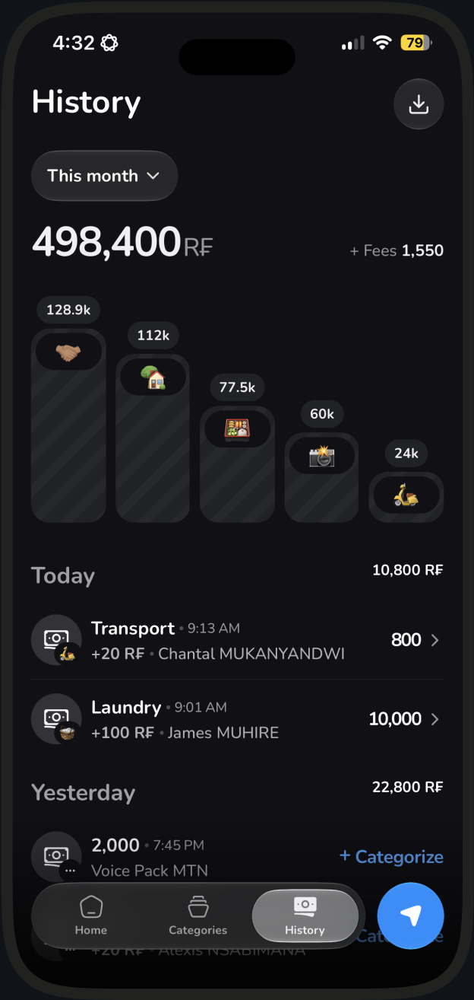

Know where your MoMo went.
Capture every transfer. Organize by category. Stay on budget without the homework.
One email when Fundt ships. Maybe two.

Capture, don't auto-sort
MoMo SMS logs the payment. It does not pick Transport or Groceries for you. You categorize untracked items.
Confirm in-app payments
When you start a transfer in Fundt, the MoMo SMS confirms it completed. Outside MoMo activity gets captured the same way.
Budgets that remind you
Set a monthly limit per category. Fundt nudges you at 70%, almost full, and over, so you catch it mid-month, not at month-end.
Common questions
What Fundt is, how MoMo capture works, and what joining the waitlist actually does.
What is Fundt?
Fundt is a personal budgeting app for people whose money moves on MTN MoMo. It helps you capture transfers, organize them by category, and stay on a monthly budget without turning it into homework.
Does Fundt sort my MoMo automatically?
No. A MoMo SMS can log that money moved. It does not pick Transport or Groceries for you. You categorize untracked items when you are ready.
Does Fundt see my MoMo PIN or balance?
No. Fundt never processes payments and never sees your PIN or balance. You complete transfers in MoMo yourself. Fundt only saves what you choose to record.
Where does my data live?
Local Mode keeps categories, budgets, and transactions on your phone. If you sign in with Google or Apple and agree to Cloud Sync, that data backs up to your account. Contacts, if you allow them, never leave the device.
What happens when I join the waitlist?
We save the email you submit and send one note to confirm you are on the list. When Fundt is on the App Store, we email you again. You can unsubscribe any time. That is it.
Is Fundt on the App Store yet?
Not yet. The waitlist is how you hear when it ships. We will not name a date until it is actually ready to download.
Can I export my history?
Yes. When you are in the app, open Privacy & data from Profile and tap Download my data. You get a CSV you can keep or share.
Why would Fundt ask for contacts?
Only to help you pick a recipient faster. Contacts stay on your phone. They are never uploaded.